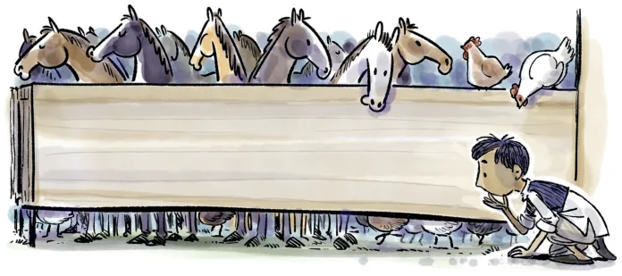

In the trick given above, what is the quotient when you divide by 9? Is there a relationship between the two numbers and the quotient?
In the trick given above, instead of finding the difference of the two 2-digit numbers, find their sum. What will happen? For example:
We start with 31. After reversing we get 13. Adding 31 and 13, we get 44.
We start with 28. After reversing we get 82. Adding 28 and 82, we get 110.
We start with 12. After reversing we get 21. Adding 12 and 21, we get 33.
Observe that all these numbers are divisible by 11. Is this always true? Can we justify this claim using algebra?
Consider any 3-digit number, say \(\overline{abc}\) \((100a + 10b + c)\). Make two other 3-digit numbers from these digits by cycling these digits around, yielding \(\overline{bca}\) and \(\overline{cab}\). Now add the three numbers. Using algebra, justify that the sum is always divisible by 37. Will it also always be divisible by 3? [Hint: Look at some multiples of 37.]
Consider any 3-digit number, say \(\overline{abc}\). Make it a 6-digit number by repeating the digits, that is \(\overline{abcabc}\). Divide this number by 7, then by 11, and finally by 13. What do you get? Try this with other numbers. Figure out why it works. [Hint: Multiply 7, 11 and 13.]
There are 3 shrines, each with a magical pond in the front. If anyone dips flowers into these magical ponds, the number of flowers doubles. A person has some flowers. He dips them all in the first pond and then places some flowers in shrine 1. Next,
he dips the remaining flowers in the second pond and places some flowers in shrine 2. Finally, he dips the remaining flowers in the third pond and then places them all in shrine 3. If he placed an equal number of flowers in each shrine, how many flowers did he start with? How many flowers did he place in each shrine?
A farm has some horses and hens. The total number of heads of these animals is 55 and the total number of legs is 150. How many horses and how many hens are on the farm?
Can you solve this without letter-numbers? [Hint: If all the 55 animals were hens, then how many legs would there be? Using the difference between this number and 150, can you find the number of horses?]

A mother is 5 times her daughter’s age. In 6 years’ time, the mother will be 3 times her daughter’s age. How old is the daughter now?
Two friends, Gauri and Naina, are cowherds. One day, they pass each other on the road with their cows. Gauri says to Naina, "You have twice as many cows as I do". Naina says, "That’s true, but if I gave you three of my cows, we would each have the same number of cows". How many cows do Gauri and Naina have?
I run a small dosa cart and my expenses are as follows:
Rent for the dosa cart is ₹5000 per day.
The cost of making one dosa (including all the ingredients and fuel) is ₹10.
If I can sell 100 dosas a day, what should be the selling price of my dosa to make a profit of ₹2000?
If my customers are willing to pay only ₹50 for a dosa, how many dosas should I aim to sell in a day to make a profit of ₹2000?